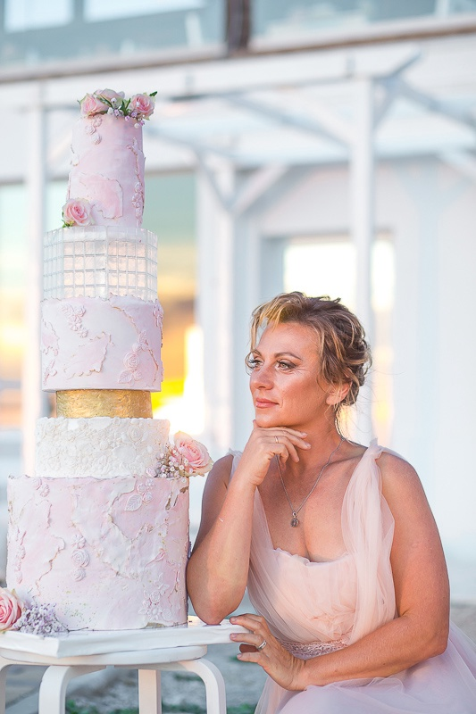
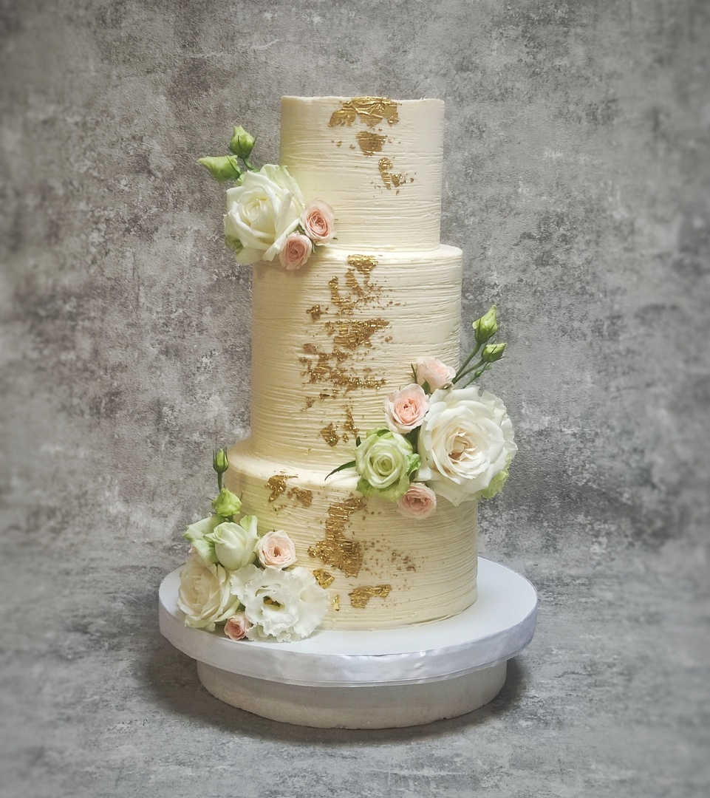

Что делать, когда ты не можешь найти тех клиентов, о которых мечтаешь?
Кондитер Светлана Гапон из Севастополя мечтала о сложных заказах, многоярусных свадебных декорах, но шли заказы на небольшие торты на детские дни рождения. Света проходила курс за курсом по маркетингу, но они не давали результатов.
Она почти отказалась от своей мечты, но решение пройти наш курс стало поворотным моментом. Читай, чего добилась Света на нашем курсе в этой статье.

Мы взяли у нее короткое интервью:
— Света, что было до курса, какой средний доход был в месяц? Сколько клиентов? Какие клиенты приходили?
— Начну с того, что я кондитер. Но, кондитер не простой, а с безумной фантазией и любовью ко всему большому и сложному. С самого начала моей кондитерской деятельности я мечтаю делать мегакрутые сложные проекты. Ведь в прошлом я дизайнер и инженер. Мне нравится создавать, что-то невероятное. И именно в тортах я нашла себя. Потому что это не кирпичи, а создать можно все что угодно.
Но, я столкнулась с реальностью.
Такие торты никому не нужны или нужны людям с большими деньгами. А мне до них как до луны. В основном мои заказы это были и есть торты на различные праздники, детские дни рождения.
Клиенты приходят по сарафану. Средний доход за минусом всех расходов получается в районе 20000 рублей. Да, бывают праздники, где можно заработать полугодовую зарплату. Но их всего парочка за весь год.
Пройдя множество курсов как по кондитерскому делу, так и по маркетингу (маркетинговые курсы не принесли мне ничего!) я осознала, что хочу попасть именно в свадебную сферу. Здесь клиенты хотят именно большие торты и интересные проекты.
Начала движение в этом направлении.
Опять курсы по техникам, по продвижению. Многочисленные хождения по агентствам и разговоры с ведущими. Результат=0. На свадебные торты попадала очень редко, просто кто случайно найдет меня в интернете.
В какой-то момент у меня почти опустились руки. Я хотела продать все оборудование и идти в найм. Ведь я утопала в однообразии заказов, мои торты были как все.
Значит клиент мог выбрать из десятков кондитеров. И, шанс, что это буду я очень маленький.
Как же я благодарю судьбу, что не сделала этого!
Решила попробовать еще раз. Отказалась от декора как у всех, начала делать свои макеты. Параллельно изучала продвижение в инстаграм. И тут новый удар. В день нашего выпуска закрывают инстаграм))))). Все ринулись в ВК. В ВК вообще никто ничего не понимал.
А, у меня, в отличии от других, там уже была группа. И в ней оказалась именно моя целевая аудитория. Не невесты, а просто люди из моего города. В ту кризисную весну я одна из не многих, кто испытал не кризис а приход. Естественно начала изучать продвижение в ВК .
Купила книги, просадила кучу денег на рекламе.
Продолжала искать подходящий курс. И, о чудо! Мне явилась Евгения Брун! С первых строк я поняла, что это то, что я так давно искала. Сразу прошла ВК лайт и потом пошла на углубленный курс.
— Какие сложности были во время обучения на курсе? Насколько сложно было учиться? За сколько прошла обучение?
— В общей сложности за три месяца, но с перерывом в полтора года.
Прошла уроки по настройке страницы и затормозилась на 18 уроке. Представляешь на самом интересном.
Но тут будут отговорки: не было времени, некогда, меня пригласили на работу в кафе. Кстати, там я получила отличный опыт как шеф-кондитер, на их базе проработала рецепты, хоть денег особо не заработала. В общем, прошло полтора года. Сейчас со всеми перепетиями в мире наступил очередной кризис.
Но, я, наконец-то, четко осознала, что без рекламы не выберусь.
И пошло.
Настолько затянуло, что не могла оторваться) Конечно, информации много. Сейчас я просто делала по кнопкам. Потому что осознавать все очень сложно. Нужно время. Но когда вдруг в этот же день активизировалась страница, я даже не подумала, что это реклама. А потом увидела метки.

Сложностей особо не было. Просто большой объем информации не сразу воспринимался. Особенно, когда настраивалась реклама. Но это дело техники. Самое сложное было придумать тексты))
— Каково было работать с куратором, что было полезно, мотивировало ли это тебя? Как считаешь, без куратора получилось бы так же?
— В блоке рекламы можно разобраться без куратора. А вот как раз на первых уроках куратор, конечно помогал и советами и психологически ты чувствуешь поддержку. Первые уроки больше на творческий подход, тут конечно нужен взгляд со стороны.
— А можешь поделиться, как изменилась жизнь, когда увеличился доход? Может что-то купила себе? Съездила в путешествие? Что-то смогла сделать, чего раньше не могла позволить себе)
— Пока только все начинается. Так что особо делиться нечем. Надо поработать сезон) Сейчас я запустила только свою первую рекламу. И нахожусь еще в шоке! Все кто написали с рекламы, остались со мной!
И сейчас заявки продолжают идти. В итоге, я сейчас имею 4 заявки на ближайшее время. Такие - как я хотела! Мега-безумные крутые свадебные торты! И доход от них 60000 рублей.
— Света, очень рада, что ты, наконец, нащупала свою аудиторию, ту, что всегда хотела! Теперь только вперед!